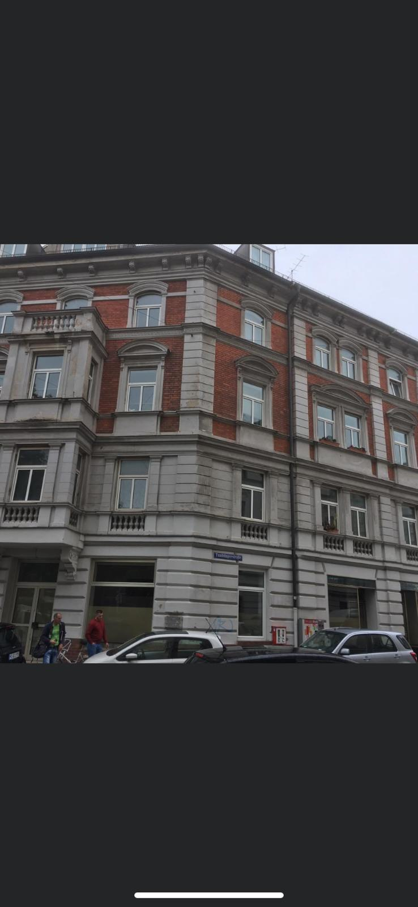

München und UmlandDirekt zu Peter Heimig 0173 4131829

Bauen. Sanieren. Werte erhalten.
Neubau. Sanierung. Alles dazwischen.
Über 40 Jahre Handwerk für Ihr Zuhause in München und Umland.
Fünf Leistungsfelder. Alle Möglichkeiten.
Von der Bausubstanz bis zum letzten Detail. Wir verbinden die Arbeiten, die Ihr Zuhause weiterbringen.
Gemeinsam Ihr Vorhaben planen ↗
Neubau · Umbau · Komplettsanierung

Dachsanierung · Abdichtung · Wärmeschutz
Putz · Anstrich · Fenster & Türen

Trockenbau · Malerarbeiten · Böden · Bäder

Terrassen · Balkone · Pflaster · Garten
Große Sanierungen im Fokus. Auch für kleine Reparaturen sind wir für Sie da.
Unsere Referenzen
Erfahrung trifft Überblick
Peter Heimig begleitet Sie persönlich. Wir hören zu, stimmen die Arbeiten ab und behalten das Ganze im Blick.
GB Haussanierungen kennenlernenWir besprechen Ihre Wünsche, betrachten den Bestand und klären den passenden Umfang.
Materialien, Bauabschnitte und vereinbarte Festpreise geben Ihrem Vorhaben eine klare Grundlage.
Die einzelnen Arbeiten greifen ineinander. Das Ergebnis betrachten wir zum Abschluss gemeinsam.
Vorher / Nachher · München
Die gleiche Fassade, neu betrachtet. Unsere Aufnahme aus dem Firmenarchiv und die spätere Straßenansicht zeigen den Unterschied.

Unterschiedliche Aufnahmezeitpunkte und Perspektiven. Der spätere Stand ist eine externe Street View Aufnahme, keine eigene Abschlussfotografie.
Das sagen unsere Kunden
Verlässlich und
pünktlich fertig gestellt.
Peter G. · München · Mauerarbeiten
MyHammer · 10. November 2024
München und Umland
Von Poing aus begleiten wir Vorhaben in München und Umland. Für Stadthäuser, Familienhäuser und neue Perspektiven.
Unser Einsatzgebiet entdecken ↗Münchenund Umland
Wissen für Ihr nächstes Projekt
 KI-generierte Illustration · kein Referenzprojekt
KI-generierte Illustration · kein ReferenzprojektHausbau & Komplettsanierung
Eine Sanierung wird übersichtlicher, wenn Entscheidungen vor den Arbeiten fallen. Entscheidend ist weniger eine starre Liste als die Frage, welche Arbeit die nächste vorbereitet.
Artikel lesen
Fassade & Fenster
Ein Riss ist ein sichtbares Zeichen, aber noch keine Erklärung. Für die passende Instandsetzung zählt, wo er liegt und wie sich das Bauteil verhält.
Artikel lesen
Außenanlagen & Garten
Eine Terrasse funktioniert dann gut, wenn Größe und Material zum Alltag passen. Beginnen Sie mit Sitzplätzen und Laufwegen statt mit dem Katalogbild.
Artikel lesenLassen Sie uns anfangen